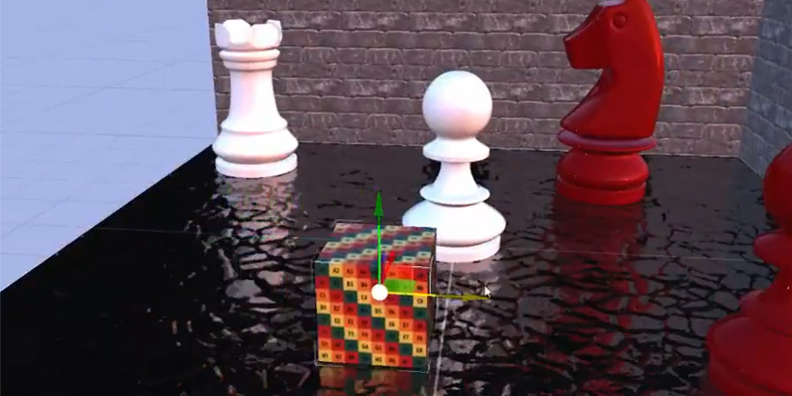

Screen Space Reflections (SSR)

Screen Space Reflections add local, real-time reflections to glossy surfaces. For each pixel, a ray is marched through the depth buffer in the reflected direction until it hits something on screen, whose color becomes the reflection.
Like every screen-space technique, SSR can only reflect what is visible: objects off screen, behind others or facing away from the camera cannot appear in it. Combine it with environment reflections, which fill in where SSR finds nothing.
SSR reads the GBuffer (normals and roughness), so it needs the GBuffer pass.
Parameters
| Parameter | Default | Description |
|---|---|---|
| Enabled | On | Turns the effect on. |
| Num. Rays | 200 | Ray-march steps per pixel. More steps find more hits and cost more. |
| Max. Reflection Distance | 10 | Longest distance, in world units, a ray travels. |
| Refinement Steps | 6 | Extra steps that refine the hit point once a ray crosses a surface, for sharper reflections. |
| Pixel Thickness | 0.00025 | How thick each depth sample is assumed to be. Raise it if reflections have holes; lower it if objects reflect things behind them. |
| Max. Roughness | 0.8 | Surfaces rougher than this get no screen-space reflection. |
| Intensity | 0.5 | Blend of the reflection over the image, from 0 to 1. |
| Debug Mode Enabled | Off | Shows only the reflections, to tune the parameters. |